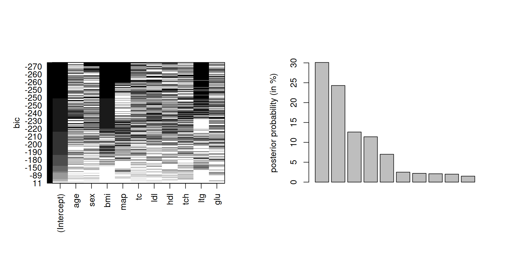
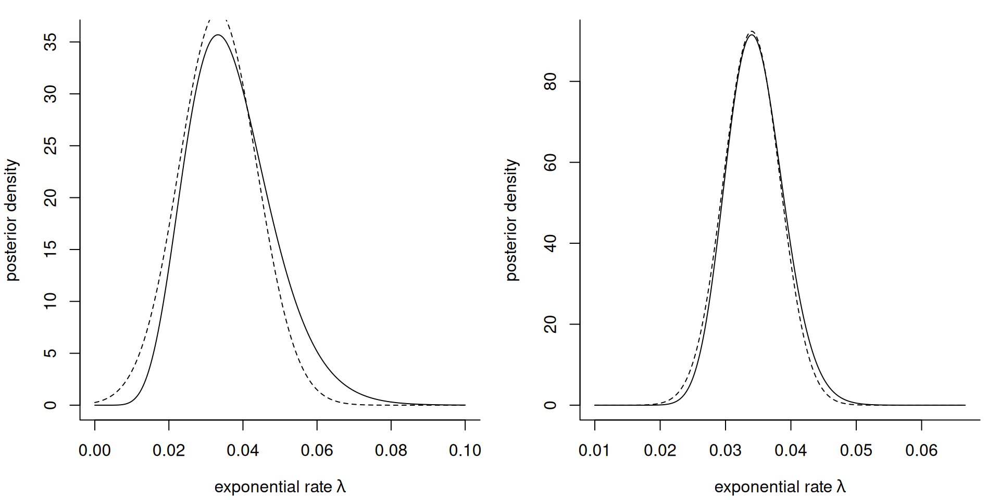
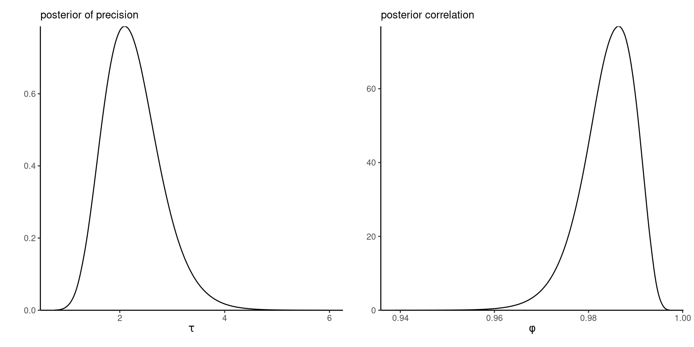
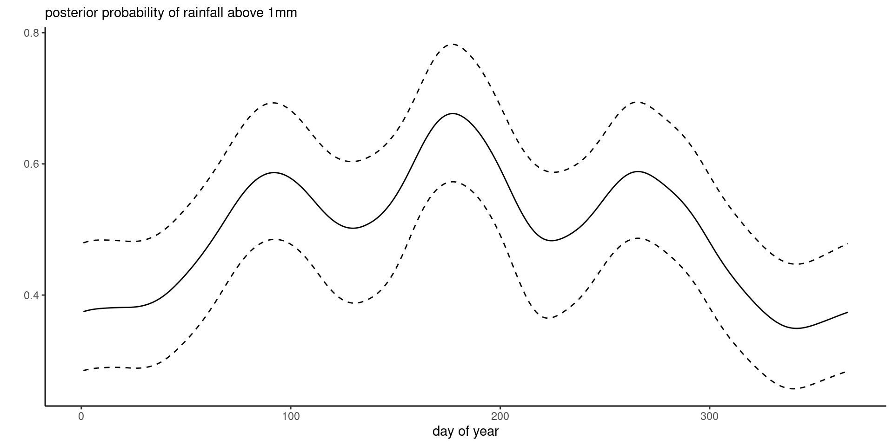

data(waiting, package = "hecbayes")
a <- 0.01; b <- 0.01
n <- length(waiting); s <- sum(waiting)
map <- (n + a - 1)/(s + b) #posterior mode
logpost <- function(x){
sum(dexp(waiting, rate = x, log = TRUE)) +
dgamma(x, a, b, log = TRUE)
}
# Hessian evaluated at MAP
H <- -c(numDeriv::hessian(logpost, x = map))
# Laplace approximation
marg_lik_laplace <- 0.5*log(2*pi) - log(H) + logpost(map)Bayesian modelling
Deterministic approximations
Léo Belzile
Last compiled Monday Apr 7, 2025
Rationale for deterministic approximations
Markov chain Monte Carlo methods require tuning and can be markedly slow when the dimension of the parameter space grows.
The curse of dimensionality affects the performance of MCMC.
We consider simple approximations to the marginal likelihood, posterior moments, or posterior density that only require numerical optimization.
Landau notation
We need notation to characterize the growth rate of functions: when \(n \to \infty\)
- big-O: \(x = \mathrm{O}(n)\) means that \(x/n \to c \in \mathbb{R}\) as \(n\to \infty\)
- little-o: \(x =\mathrm{o}(n)\) implies \(x/n \to 0\) as \(n\to \infty.\)
Taylor series expansion
Consider a concave function \(h(x)\) assumed twice continuously differentiable with mode at \(x_0\). Then, a Taylor series expansion around \(x_0\) gives \[\begin{align*} h(x) = h(x_0) + h'(x_0)(x-x_0) + h''(x_0)(x-x_0)^2/2 + R \end{align*}\] where the remainder \(R=\mathrm{O}\{(x-x_0)^3\}.\)
Multivariate Taylor series expansion
Similarly, for \(h(\boldsymbol{x})\) a smooth vector valued function with mode at \(\boldsymbol{x}_0 \in \mathbb{R}^p\), we can write \[\begin{align*} h(\boldsymbol{x}) &= h(\boldsymbol{x}_0) + (\boldsymbol{x}- \boldsymbol{x}_0)^\top h'(\boldsymbol{x}_0) \\&+ \frac{1}{2}(\boldsymbol{x}- \boldsymbol{x}_0)^\top h''(\boldsymbol{x}_0)(\boldsymbol{x}- \boldsymbol{x}_0) + R. \end{align*}\] Under regularity conditions, the mode \(\boldsymbol{x}_0\) is such that \(h'(\boldsymbol{x}_0)=\boldsymbol{0}_p.\)
Laplace approximation
The Laplace approximation is used to approximate integrals of non-negative functions \(g(\boldsymbol{x})\) that are \(\mathrm{O}(n)\) of the form \[\begin{align*} I_n = \int_{\mathbb{R}_p} g(\boldsymbol{x}) \mathrm{d} \boldsymbol{x} = \int \exp\{h(\boldsymbol{x})\}\mathrm{d} \boldsymbol{x}. \end{align*}\]
The idea is that we can, ignoring terms above third order and assuming \(\boldsymbol{x}_0\) satisfies \(h'(\boldsymbol{x}_0)=\boldsymbol{0}_p,\) approximate \(g(\cdot)\) by a multivariate Gaussian density.
Laplace approximation to integrals
If we perform a Taylor series expansion of the log of the integrand, then \[\begin{align*} I_n \approx (2\pi)^{p/2} | \mathbf{H}(\boldsymbol{x}_0)|^{-1/2}\exp\{h(\boldsymbol{x}_0)\} + \mathrm{O}(n^{-1}) \end{align*}\] where \(|\mathbf{H}(\boldsymbol{x}_0)|\) is the determinant of the Hessian matrix of \(-h(\boldsymbol{x})\) evaluated at the mode \(\boldsymbol{x}_0.\)
Laplace approximation
- The idea behind the Laplace approximation is to approximate the log of the density (since the latter must be non-negative).
- Compared to sampling-based methods, the Laplace approximation requires optimization.
- The Laplace approximation is not invariant to reparametrization: in practice, it is best to perform it on a scale where the likelihood is as close to quadratic as possible in \(g(\boldsymbol{\theta})\) and back-transform using a change of variable.
Laplace approximation to the marginal likelihood
Consider a simple random sample of size \(n\) from a distribution with parameter vector \(\boldsymbol{\theta} \in \mathbb{R}^p.\)
Write (Raftery, 1995) \[\begin{align*} p(\boldsymbol{y}) = \int_{\mathbb{R}^p} p(\boldsymbol{y} \mid \boldsymbol{\theta}) p(\boldsymbol{\theta}) \mathrm{d} \boldsymbol{\theta} \end{align*}\] and take \[\begin{align*}h(\boldsymbol{\theta}) = \log p(\boldsymbol{y} \mid \boldsymbol{\theta}) + \log p(\boldsymbol{\theta}). \end{align*}\]
Laplace approximation to the marginal likelihood
Evaluating at the maximum a posteriori \(\widehat{\boldsymbol{\theta}}_{\mathrm{MAP}}\) and letting \(-\mathbf{H}\) denote the Hessian matrix of second partial derivatives of the unnormalized log posterior, we get (Tierney & Kadane, 1986) \[\begin{align*} \log p(\boldsymbol{y}) &= \log p(\widehat{\boldsymbol{\theta}}_{\mathrm{MAP}}) + \log p(\boldsymbol{y} \mid \widehat{\boldsymbol{\theta}}_{\mathrm{MAP}}) \\&\quad + \frac{p}{2} \log (2\pi) - \frac{1}{2}\log |\mathbf{H}(\widehat{\boldsymbol{\theta}}_{\mathrm{MAP}})| + \mathrm{O}(n^{-1}) \end{align*}\]
Example with exponential likelihood
Consider an exponential likelihood \(Y_i \mid \lambda \sim \mathsf{expo}(\lambda)\) with conjugate gamma prior \(\lambda \sim \mathsf{gamma}(a,b)\). The exponential model has information \(i(\lambda)=n/\lambda^2\) and the mode of the posterior is \[\widehat{\lambda}_{\mathrm{MAP}}=\frac{n+a-1}{\sum_{i=1}^n y_i + b}.\]
Marginal likelihood approximation for exponential likelihood
We can also obtain an estimate of the marginal likelihood, which is equal for the conjugate model \[\begin{align*} p(\boldsymbol{y}) = \frac{\Gamma(n+a)}{\Gamma(a)}\frac{b^a}{\left(b + \sum_{i=1}^n y_i \right)^{n+a}}. \end{align*}\]
For the sample of size \(62,\) the exponential model marginal likelihood is \(-276.5.\)
Numerical approximation to marginal likelihood
The Laplace approximation gives \(-281.9.\)
Posterior expectation using Laplace method
If we are interested in computing the posterior expectation of a positive real-valued functional \(g(\boldsymbol{\theta}): \mathbb{R}^p \to \mathbb{R}_{+},\) we may write \[\begin{align*} \mathsf{E}_{\boldsymbol{\Theta} \mid \boldsymbol{Y}}\{g(\boldsymbol{\theta}) \mid \boldsymbol{y}\} &= \frac{\int g(\boldsymbol{\theta}) p(\boldsymbol{y} \mid \boldsymbol{\theta}) p( \boldsymbol{\theta}) \mathrm{d} \boldsymbol{\theta}}{\int p(\boldsymbol{y} \mid \boldsymbol{\theta})p( \boldsymbol{\theta}) \mathrm{d} \boldsymbol{\theta}} \end{align*}\]
Posterior expectation via Laplace
We can apply Laplace’s method to both numerator and denominator. Let \(\widehat{\boldsymbol{\theta}}_g\) and \(\widehat{\boldsymbol{\theta}}_{\mathrm{MAP}}\) of the integrand of the numerator and denominator, respectively, and the negative of the Hessian matrix of the log integrands \[\begin{align*} \jmath_g&= -\frac{\partial^2}{\partial \boldsymbol{\theta}\partial \boldsymbol{\theta}^\top} \left\{ \log g(\boldsymbol{\theta}) + \log p(\boldsymbol{y} \mid \boldsymbol{\theta}) + \log p(\boldsymbol{\theta})\right\}, \\ \jmath &= -\frac{\partial^2}{\partial \boldsymbol{\theta}\partial \boldsymbol{\theta}^\top} \left\{\log p(\boldsymbol{y} \mid \boldsymbol{\theta}) + \log p(\boldsymbol{\theta})\right\}. \end{align*}\]
Posterior expectation approximation
Putting these together \[\begin{align*} \mathsf{E}_{\boldsymbol{\Theta} \mid \boldsymbol{Y}}\{g(\boldsymbol{\theta}) \mid \boldsymbol{y}\} \approx \frac{|\jmath(\widehat{\boldsymbol{\theta}}_{\mathrm{MAP}})|^{1/2}}{|\jmath_g(\widehat{\boldsymbol{\theta}}_g)|^{1/2}} \frac{g(\widehat{\boldsymbol{\theta}}_g) p(\boldsymbol{y} \mid \widehat{\boldsymbol{\theta}}_g) p( \widehat{\boldsymbol{\theta}}_g)}{p(\boldsymbol{y} \mid \widehat{\boldsymbol{\theta}}_{\mathrm{MAP}}) p(\widehat{\boldsymbol{\theta}}_{\mathrm{MAP}})}. \end{align*}\] While the Laplace method has an error \(\mathrm{O}(n^{-1}),\) the leading order term of the expansion cancels out from the ratio and the above has error of \(\mathrm{O}(n^{-2}).\)
Example of posterior mean for exponential likelihood
Consider the posterior mean \(\mathsf{E}_{\Lambda \mid \boldsymbol{Y}}(\lambda)\) and let \(s=\sum_{i=1}^n y_i\). Then, \[\begin{align*} \widehat{\lambda}_g &= \frac{(n+a)}{s + b} \\ |\jmath_g(\widehat{\lambda}_g)|^{1/2} &= \left(\frac{n+a}{\widehat{\lambda}_g^2}\right)^{1/2} = \frac{s + b}{(n+a)^{1/2}} \end{align*}\]
Posterior mean
Simplification gives the approximation \[\begin{align*} \frac{\exp(-1)}{s + b} \frac{(n+a)^{n+a+1/2}}{(n+a-1)^{n+a-1/2}} \end{align*}\] which gives \(0.03457,\) whereas the true posterior mean is \((n+a)/(s+b) = 0.03457.\)
Aside on prior and likelihood relative contribution
Usually,
- \(p(\boldsymbol{\theta}) = \mathrm{O}(1)\) and
- \(p(\boldsymbol{y} \mid \boldsymbol{\theta}) = \mathrm{O}(n)\)
Thus, provided the prior does not impose unnecessary support constraints, we could alternatively
- replace the MAP by the MLE, and
- the Hessian \(-\mathbf{H}(\widehat{\boldsymbol{\theta}}_{\mathrm{MAP}})\) by the Fisher information \(n\boldsymbol{\imath}(\widehat{\boldsymbol{\theta}}_{\mathrm{MLE}}).\)
Frequentist approximations
If we use these approximations instead, we get \[\begin{align*} \log p(\boldsymbol{y}) &= \log p(\boldsymbol{y} \mid \widehat{\boldsymbol{\theta}}_{\mathrm{MLE}}) -\frac{p}{2} \log n + \log p(\widehat{\boldsymbol{\theta}}_{\mathrm{MLE}})\\& \quad - \frac{1}{2} \log |\boldsymbol{\imath}(\widehat{\boldsymbol{\theta}}_{\mathrm{MLE}})| + \frac{p}{2} \log(2\pi) + \mathrm{O}(n^{-1/2}) \end{align*}\] where the error is now \(\mathrm{O}(n^{-1/2})\) due to replacing the true information by it’s sample counterpart.
Reducing the approximation rate
Ignoring all but the two first terms leads to \(\mathrm{O}(1)\) approximation error, unless we consider the setting where we take a prior centered at the MLE with unit Fisher information precision (equivalent to \(n=1\) phantom observation). Then, due to cancellation of terms in the expansion, \[\boldsymbol{\theta} \sim \mathsf{Gauss}_p\{ \widehat{\boldsymbol{\theta}}_{\mathrm{MLE}}, \boldsymbol{\imath}^{-1}(\widehat{\boldsymbol{\theta}}_{\mathrm{MLE}})\},\] with approximation error of \(\mathrm{O}(n^{-1/2}).\)
Frequentist approximation to the marginal likelihood
This gives the approximation, whose quality improves with increasing sample size \(n\): \[\begin{align*} -2\log p(\boldsymbol{y}) \approx \mathsf{BIC} = -2\log p(\boldsymbol{y} \mid \boldsymbol{\theta}) + p\log n \end{align*}\]
The unnormalized weight \(\exp(-\mathsf{BIC}/2)\) is an approximation fo the marginal likelihood sometimes used for model comparison in Bayes factor.
Bayesian model averaging via BIC
We consider the diabetes model from Park & Casella (2008) and models with 10 predictors plus intercept.
library(leaps)
data(diabetes, package = "lars")
search <- leaps::regsubsets(
x = diabetes$x,
y = diabetes$y,
intercept = TRUE,
method = "exhaustive",
nvmax = 10, nbest = 99, really.big = TRUE)
models_bic <- summary(search)$bic
# Renormalize BIC and keep only models with some weight
bic <- models_bic - min(models_bic)
models <- which(bic < 7)
bma_weights <- exp(-bic[models]/2)/sum(exp(-bic[models]/2))Weights and model components
Figure 1: BIC as a function of the linear model covariates (left) and Bayesian model averaging approximate weights (in percentage) for the 10 models with the highest posterior weights according to the BIC approximation.
Gaussian approximation to the posterior
We can also use similar ideas to approximate the posterior. Suppose that we can Taylor expand the log prior and log density around their respective mode, say \(\widehat{\boldsymbol{\theta}}_0\) and \(\widehat{\boldsymbol{\theta}}_{\mathrm{MLE}},\) with \(\jmath_0(\widehat{\boldsymbol{\theta}}_0)\) and \(\jmath(\widehat{\boldsymbol{\theta}}_{\mathrm{MLE}})\) denoting negative of the corresponding Hessian matrices.
Approximation to posterior
Together, these yield \[\begin{align*} \log p(\boldsymbol{\theta}) &\approx \log p(\widehat{\boldsymbol{\theta}}_0) - \frac{1}{2}(\boldsymbol{\theta} - \widehat{\boldsymbol{\theta}}_0)^\top\jmath_0(\widehat{\boldsymbol{\theta}}_0)(\boldsymbol{\theta} - \widehat{\boldsymbol{\theta}}_0)\\ \log p(\boldsymbol{y} \mid \boldsymbol{\theta}) &\approx \log p(\boldsymbol{y} \mid \widehat{\boldsymbol{\theta}}_{\mathrm{MLE}})\\& \quad - \frac{1}{2}(\boldsymbol{\theta} - \widehat{\boldsymbol{\theta}}_{\mathrm{MLE}})^\top\jmath(\widehat{\boldsymbol{\theta}}_{\mathrm{MLE}})(\boldsymbol{\theta} - \widehat{\boldsymbol{\theta}}_{\mathrm{MLE}}) \end{align*}\]
Gaussian approximation to posterior
The approximate posterior must be Gaussian with precision \(\jmath_n^{-1}\) and mean \(\mu_n,\) where \[\begin{align*} \jmath_n &= \jmath_0(\widehat{\boldsymbol{\theta}}_{0}) + \jmath(\widehat{\boldsymbol{\theta}}_{\mathrm{MLE}}) \\ \widehat{\boldsymbol{\theta}}_n &= \jmath_n^{-1}\left\{ \jmath_0(\widehat{\boldsymbol{\theta}}_{0})\widehat{\boldsymbol{\theta}}_{0} + \jmath(\widehat{\boldsymbol{\theta}}_{\mathrm{MLE}})\widehat{\boldsymbol{\theta}}_{\mathrm{MLE}}\right\} \end{align*}\] and note that \(\jmath_0(\widehat{\boldsymbol{\theta}}_{0}) = \mathrm{O}(1),\) whereas \(\jmath_n\) is \(\mathrm{O}(n).\)
Gaussian large-sample approximation to MLE
Suppose that the prior is continuous and positive in a neighborhood of the maximum.
Assume further that the regularity conditions for maximum likelihood estimator holds. Then, in the limit as \(n \to \infty\) \[\begin{align*} \boldsymbol{\theta} \mid \boldsymbol{y} \stackrel{\cdot}{\sim} \mathsf{Gauss}_p\{ \widehat{\boldsymbol{\theta}}_{\mathrm{MLE}}, \jmath^{-1}(\widehat{\boldsymbol{\theta}}_{\mathrm{MLE}})\} \end{align*}\]
Corollary
In large samples, the inference obtained from using likelihood-based inference and Bayesian methods will be equivalent
- credible intervals will also have guaranteed frequentist coverage.
Misspecified model: Bayesian will return the model from the family that minimizes the Kullback–Leibler divergence with the true data generating process.
Regularity conditions
- The maximizer must be uniquely identified from the data and must not be on boundary, so that we can perform a two-sided Taylor series expansion around \(\boldsymbol{\theta}_0.\)
- We need to be able to apply the law of large numbers to get the variance (reciprocal Fisher information) and apply a central limit theorem to the score.
- The third-order derivative of the likelihood is bounded: we can get away with weaker, but this is easiest to check (and ensures that the higher order terms of the Taylor series expansion vanishes asymptotically).
Gaussian approximation to gamma posterior

Figure 2: Gaussian approximation (dashed) to the posterior density (full line) of the exponential rate \(\lambda\) for the waiting dataset with an exponential likelihood and a gamma prior with \(a=0.01\) and \(b=0.01.\) The plots are based on the first \(10\) observations (left) and the whole sample of size \(n=62\) (right).
Structured models
Models in genomics data or spatio-temporal applications including random effects (e.g., spline smoothers) are predominant.
They often contain several thousands or millions of latent parameters.
Inference becomes unfeasible in reasonable time using methods we covered so far.
Integrated nested Laplace approximation
Consider a model with response \(\boldsymbol{y}\) which depends on covariates \(\mathbf{x}\) through a latent Gaussian process \(\boldsymbol{\beta}.\)
Typically, the prior of coefficients \(\boldsymbol{\beta} \in \mathbb{R}^p.\) The dimension \(p\) can be substantial (several thousands) with a comparably low-dimensional hyperparameter vector \(\boldsymbol{\theta} \in \mathbb{R}^m.\)
Consider data that are conditionally independent given \(\boldsymbol{\beta}\) and \(\boldsymbol{\beta} \sim \mathsf{Gauss}_p(\boldsymbol{0}_p, \mathbf{Q}^{-1})\) for simplicity.
Gaussian approximations considered
Then, \[\begin{align*} p(\boldsymbol{\beta} \mid \boldsymbol{y}, \boldsymbol{\theta}) \propto \exp\left\{-\frac{1}{2} \boldsymbol{\beta}^\top\mathbf{Q}\boldsymbol{\beta} + \sum_{i=1}^n \log p(y_i \mid \beta_i, \boldsymbol{\theta})\right\} \end{align*}\] If \(\boldsymbol{\beta}\) is a Gaussian Markov random field, it’s precision matrix \(\mathbf{Q}\) will be sparse. A Gaussian approximation to this model would have precision matrix \(\mathbf{Q} + \mathrm{diag}(\boldsymbol{c})\) for some vector \(\boldsymbol{c}\) obtained from the second-order expansion of the likelihood.
This allows one to use dedicated algorithms for sparse matrices.
INLA: targets of inference
Interest typically then lies in marginal parameters \[\begin{align*} p(\beta_i \mid \boldsymbol{y}) &= \int p(\beta_i \mid \boldsymbol{\theta}, \boldsymbol{y}) p(\boldsymbol{\theta} \mid \boldsymbol{y}) \mathrm{d} \boldsymbol{\theta}\\ p(\theta_i \mid \boldsymbol{y}) &= \int p(\boldsymbol{\theta} \mid \boldsymbol{y}) \mathrm{d} \boldsymbol{\theta}_{-i} \end{align*}\] where \(\boldsymbol{\theta}_{-i}\) denotes the vector of hyperparameters excluding the \(i\)th element \(\theta_i.\)
Philosophy of INLA
The INLA method builds Laplace approximations to the integrands \(p(\beta_i \mid \boldsymbol{\theta}, \boldsymbol{y})\) and \(p(\boldsymbol{\theta} \mid \boldsymbol{y}),\) and evaluates the integral using quadrature rules over a coarse grid of values of \(\boldsymbol{\theta}.\)
The marginal posterior \(p(\boldsymbol{\theta} \mid \boldsymbol{y})\) is approximated by writing \[p(\boldsymbol{\beta}, \boldsymbol{\theta} \mid \boldsymbol{y}) \propto p(\boldsymbol{\beta} \mid \boldsymbol{\theta}, \boldsymbol{y}) p(\boldsymbol{\theta} \mid \boldsymbol{y})\] and performing a Laplace approximation for fixed value of \(\boldsymbol{\theta}\) for the term \(p(\boldsymbol{\beta} \mid \boldsymbol{\theta}, \boldsymbol{y}),\) whose mode we denote by \(\widehat{\boldsymbol{\beta}}.\)
INLA approximation (step 1)
This yields \[\begin{align*} \widetilde{p}(\boldsymbol{\theta} \mid \boldsymbol{y}) \propto \frac{p(\widehat{\boldsymbol{\beta}}, \boldsymbol{\theta} \mid \boldsymbol{y})}{ p_{G}(\widehat{\boldsymbol{\beta}} \mid \boldsymbol{y}, \boldsymbol{\theta})} = \frac{p(\widehat{\boldsymbol{\beta}}, \boldsymbol{\theta} \mid \boldsymbol{y})}{ |\mathbf{H}(\widehat{\boldsymbol{\beta}})|^{1/2}} \end{align*}\]
Note on approximation
The Laplace approximation \(p_{G}(\widehat{\boldsymbol{\beta}} \mid \boldsymbol{y}, \boldsymbol{\theta})\) has kernel \[p_{G}(\boldsymbol{\beta} \mid \boldsymbol{y}, \boldsymbol{\theta}) \propto |\mathbf{H}(\widehat{\boldsymbol{\beta}})|^{1/2}\exp\{-(\boldsymbol{\beta}- \widehat{\boldsymbol{\beta}})^\top \mathbf{H}(\widehat{\boldsymbol{\beta}})(\boldsymbol{\beta}- \widehat{\boldsymbol{\beta}})/2\};\] since it is evaluated at \(\widehat{\boldsymbol{\beta}},\) we retrieve only the determinant of the negative Hessian of \(p(\boldsymbol{\beta} \mid \boldsymbol{\theta}, \boldsymbol{y}),\) namely \(\mathbf{H}(\widehat{\boldsymbol{\beta}}).\) Note that the latter varies with \(\boldsymbol{\theta}.\)
Numerical integration
To obtain \(p(\theta_i \mid \boldsymbol{y})\), we then proceed with
- finding the mode of \(\widetilde{p}(\boldsymbol{\theta} \mid \boldsymbol{y})\) using a Newton’s method, approximating the gradient and Hessian via finite differences.
- Compute the negative Hessian at the mode to get an approximation to the covariance of \(\boldsymbol{\theta}.\) Use an eigendecomposition to get the principal directions \(\boldsymbol{z}\).
Numerical integration (2)
- In each direction of \(\boldsymbol{z}\), consider drops in \(\widetilde{p}(\boldsymbol{\theta} \mid \boldsymbol{y})\) as we move away from the mode and define a coarse grid based on these, keeping points where the difference in \(\widetilde{p}(\boldsymbol{\theta} \mid \boldsymbol{y})\) relative to the mode is less than some small \(\delta.\)
- Retrieve the marginal by numerical integration using the central composition design outline above. We can also use directly avoid the integration and use the approximation at the posterior mode of \(\widetilde{p}(\boldsymbol{\theta} \mid \boldsymbol{y}).\)
Approximation of marginal of Gaussian latent effect
For the marginal \(p(\beta_i \mid \boldsymbol{y})\) term, Rue et al. (2009) proceed instead with the marginal for \(\beta_i\) by building an approximation of it based on maximizing \(\boldsymbol{\beta}_{-i} \mid \beta_i, \boldsymbol{\theta}, \boldsymbol{y}\) to yield \(\widehat{\boldsymbol{\beta}}_{(i)}\) whose \(i\)th element is \(\beta_i,\) yielding \[\begin{align*} \widetilde{p}(\beta_i \mid \boldsymbol{\theta}, \boldsymbol{y}) \propto \frac{p(\widehat{\boldsymbol{\beta}}_{(i)}, \boldsymbol{\theta} \mid \boldsymbol{y})}{\widetilde{p}(\widehat{\boldsymbol{\beta}}_{(i),-i} \mid \beta_i, \boldsymbol{\theta}, \boldsymbol{y})}, \end{align*}\] with a suitable renormalization of \(\widetilde{p}(\widehat{\boldsymbol{\beta}}_{(i),-i} \mid \beta_i, \boldsymbol{\theta}, \boldsymbol{y}).\)
Remark on approximation
While we could use the Laplace approximation \(p_{G}(\widehat{\boldsymbol{\beta}} \mid \boldsymbol{y}, \boldsymbol{\theta})\) and marginalize the latter directly, this leads to evaluation of the Laplace approximation to the density far from the mode, which is often inaccurate.
Numerical challenges to Laplace approximation
One challenge is that \(p\) is very large, so calculation of the Hessian \(\mathbf{H}\) is costly to evaluate.
Having to evaluate it repeatedly for each marginal \(\beta_i\) for \(i=1, \ldots, p\) is prohibitive since it involves factorizations of \(p \times p\) matrices.
Further approximations
To reduce the computational costs, Rue et al. (2009) propose to use the approximate mean to avoid optimizing and use the conditional of the Gaussian approximation with mean \(\widehat{\boldsymbol{\beta}}\) and covariance \(\boldsymbol{\Sigma} = \mathbf{H}^{-1}(\widehat{\boldsymbol{\beta}}),\) \[\begin{align*} \boldsymbol{\beta}_{-i} \mid \beta_i, \boldsymbol{\theta}, \boldsymbol{y} &\approx \mathsf{Gauss}_{p-1}\left(\widetilde{\boldsymbol{\beta}}_{(i)}, \mathbf{M}^{-1}_{-i,-i}\right); \\ \widetilde{\boldsymbol{\beta}}_{(i)} &= \widehat{\boldsymbol{\beta}}_{-i} + \boldsymbol{\Sigma}_{i,i}^{-1}\boldsymbol{\Sigma}_{i,-i}(\beta_i - \widehat{\beta}_i), \end{align*}\] This only requires a rank-one update.
Further approximations
Wood (2019) suggest to use a Newton step to correct \(\widetilde{\boldsymbol{\beta}}_{(i)},\) starting from the conditional mean.
The second step is to exploit the local dependence on \(\boldsymbol{\beta}\) using the Markov structure to build an improvement to the Hessian. Various strategies are proposed in Rue et al. (2009) and Wood (2019).
Nowadays, the INLA software uses a low-rank variational correction to Laplace method, proposed in van Niekerk & Rue (2024).
The INLA software
The INLA R package provides an interface to fit models with Gaussian latent random effects. While the software is particularly popular for spatio-temporal applications using the SPDE approach, we revisit two examples in the sequel where we can exploit the Markov structure.
Stochastic volatility model with INLA
Financial returns \(Y_t\) typically exhibit time-varying variability. The stochastic volatility model is a parameter-driven model that specifies \[\begin{align*}
Y_t &= \exp(h_t/2) Z_t \\
h_t &= \gamma + \phi (h_{t-1} - \gamma) + \sigma U_t
\end{align*}\] where \(U_t \stackrel{\mathrm{iid}}{\sim} \mathsf{Gauss}(0,1)\) and \(Z_t \sim \stackrel{\mathrm{iid}}{\sim} \mathsf{Gauss}(0,1).\) The INLA documentation provides information about which default prior and hyperparameters are specified. We use a \(\mathsf{gamma}(1, 0.001)\) prior for the precision.
Stochastic volality code
library(INLA)
data(exchangerate, package = "hecbayes")
# Compute response from raw spot exchange rates at noon
y <- 100*diff(log(exchangerate$dexrate))
time <- seq_along(y)
data <- data.frame(y = y, time = time)
f_stochvol <- y ~ f(time, model = "ar1",
param = list(prec = c(1, 0.001)))
mod_stochvol <- inla(f_stochvol, family = "stochvol", data = data)
# Obtain summary
summary <- summary(mod_stochvol)
# plot(mod_stochvol)
marg_prec <- mod_stochvol$marginals.hyperpar[[1]]
marg_phi <- mod_stochvol$marginals.hyperpar[[2]]Marginal posterior approximations
Figure 3: Marginal densities of precision and autocorrelation parameters from the Gaussian stochastic volatility model.
Marginal approximations
We can use the marginal density approximations to obtain quantiles for summary of interest, marginal posterior moments, etc.
The software also includes utilities to transform the parameters using the change of variable formula.
Marginal summaries
# Compute density, quantiles, etc. via inla.*marginal
# Change of variable to get variance from precision
marg_var <- INLA::inla.tmarginal(
fun = function(x) { 1 / x },
marginal = marg_prec)
INLA::inla.qmarginal(marg_var, p = c(0.025, 0.5, 0.975))[1] 0.2864905 0.4543037 0.7396820# Posterior marginal mean and variance of phi
mom1 <- INLA::inla.emarginal(
fun = function(x){x},
marginal = marg_phi)
mom2 <- INLA::inla.emarginal(
fun = function(x){x^2},
marginal = marg_phi)
c(mean = mom1, sd = sqrt(mom2 - mom1^2)) mean sd
0.984052723 0.005762531 Tokyo binomial time series
We revisit the Tokyo rainfall example, but this time fit the model with INLA rather than MCMC.
We specify the mean model without intercept and fit a logistic regression, with a second-order cyclic random walk prior for the coefficients, and the default priors for the other parameters.
Code syntax
The marginal posterior with pointwise 95% credible intervals on the next slide show nearly identical results to marginals from the probit model.
Posterior of random effect prior
Figure 4: Posterior probability per day of the year with posterior median and 95% credible interval for the Tokyo rainfall binomial time series.
References
Park, T., & Casella, G. (2008). The Bayesian Lasso. Journal of the American Statistical Association, 103(482), 681–686. https://doi.org/10.1198/016214508000000337
Raftery, A. E. (1995). Bayesian model selection in social research. Sociological Methodology, 25, 111–163. https://doi.org/10.2307/271063
Rue, H., Martino, S., & Chopin, N. (2009). Approximate bayesian inference for latent Gaussian models by using integrated nested Laplace approximations. Journal of the Royal Statistical Society: Series B (Statistical Methodology), 71(2), 319–392. https://doi.org/10.1111/j.1467-9868.2008.00700.x
Tierney, L., & Kadane, J. B. (1986). Accurate approximations for posterior moments and marginal densities. Journal of the American Statistical Association, 81(393), 82–86. https://doi.org/10.1080/01621459.1986.10478240
van Niekerk, J., & Rue, H. (2024). Low-rank variational Bayes correction to the Laplace method. Journal of Machine Learning Research, 25(62), 1–25. http://jmlr.org/papers/v25/21-1405.html
Wood, S. N. (2019). Simplified integrated nested Laplace approximation. Biometrika, 107(1), 223–230. https://doi.org/10.1093/biomet/asz044

Comment on stochastic volatility
Figure 3 shows that the correlation \(\phi\) is nearly one, leading to random walk behaviour and high persistence over time (this is also due to the frequency of observations).
This strong serial dependence in the variance is in part responsible for the difficulty in fitting this model using MCMC.